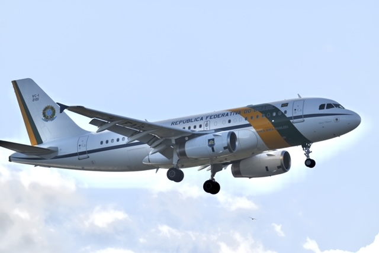
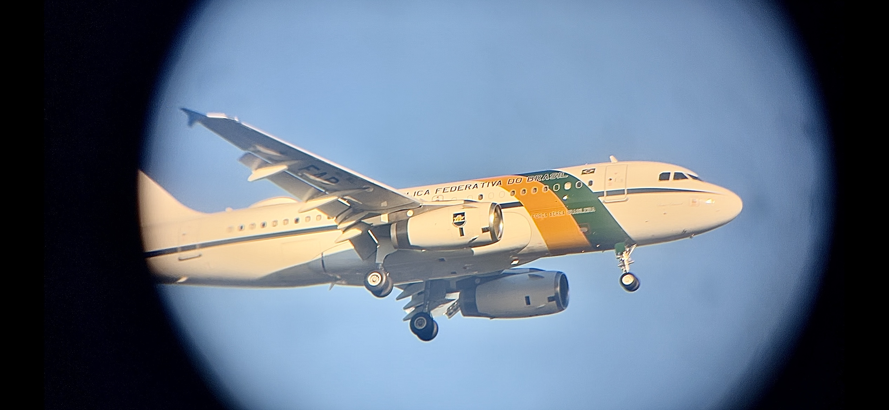
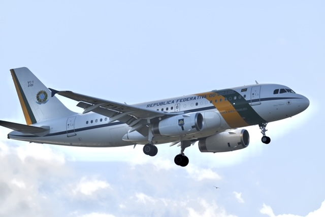
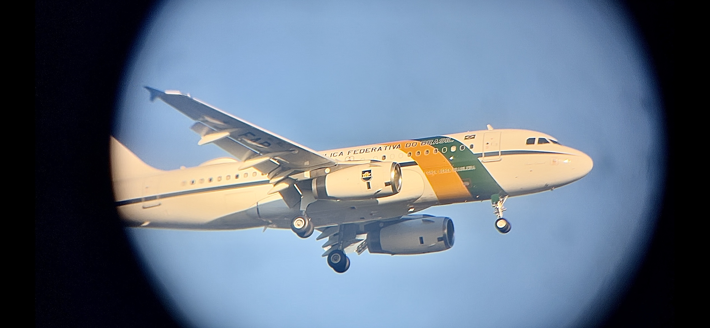

History of KJFK
1939–1948: Planning and Construction of Idlewild
By the late 1930s, New York City realized that LaGuardia Airport, which had just opened in 1939, was already nearing capacity. Mayor Fiorello LaGuardia pushed for a much larger airport that could handle the rapidly growing demand for air travel. In 1942, construction began in southern Queens on land previously occupied by the Idlewild Golf Course. World War II delayed progress, but the project resumed in full force afterward. On July 1, 1948, the new facility officially opened as New York International Airport, commonly referred to as Idlewild. Its design focused on handling international traffic, and it became a symbol of postwar aviation growth.
1950s–1963: Terminal City and the Jet Age
During the 1950s and early 1960s, Idlewild underwent massive expansion. Instead of a single central terminal, the airport pioneered the “Terminal City” concept, where individual airlines constructed their own terminals. Pan Am built the futuristic Worldport (Terminal 3) with a flying-saucer roof, while TWA opened the iconic Flight Center (Terminal 5), designed by Eero Saarinen. Other airlines like American and Eastern built their own facilities, creating a unique mix of architecture. The jet age arrived in the late 1950s with the Boeing 707, and Idlewild quickly became America’s primary international gateway. In December 1963, following the assassination of President John F. Kennedy, the airport was renamed John F. Kennedy International Airport (JFK).
1970s–1980s: Widebody Era and Concorde
The introduction of widebody aircraft transformed JFK in the 1970s. On January 22, 1970, Pan Am launched the first-ever Boeing 747 passenger flight from JFK, marking the dawn of a new era in long-haul travel. The airport became a hub for jumbo jets, with airlines from around the globe flying 747s, DC-10s, and L-1011s. In 1977, supersonic travel arrived when British Airways and Air France began Concorde service between JFK, London, and Paris, cutting travel time to under 3.5 hours. JFK also became a major cargo hub during this time, with airlines like Flying Tigers and later FedEx establishing operations. By the 1980s, JFK was firmly established as one of the busiest international airports in the world.
1990s–2000s: Modernization and Security Changes
By the 1990s, many of JFK’s airline-specific terminals were aging, leading to plans for consolidation and modernization. JetBlue Airways launched in 1999 and soon established its home base at Terminal 6 (later expanded into Terminal 5). The terrorist attacks of September 11, 2001, reshaped aviation worldwide. JFK played a central role during the airspace shutdown, hosting numerous diverted international flights. Tragically, just two months later, American Airlines Flight 587, bound for Santo Domingo, crashed shortly after takeoff, becoming one of the deadliest U.S. aviation accidents. Security tightened significantly, and JFK saw upgrades in screening and passenger facilities. Delta and other carriers began expanding, while older terminals were gradually demolished.
2010s: Redevelopment and New Identity
Throughout the 2010s, JFK undertook a large-scale redevelopment program. Delta expanded Terminal 4 into a global hub, consolidating its New York operations. JetBlue invested heavily in Terminal 5, and the historic TWA Flight Center was preserved and transformed into the TWA Hotel, opening in 2019 as both a tribute to aviation history and a modern traveler’s landmark. Cargo operations continued to grow, and new airlines like Emirates, Etihad, and Singapore Airlines brought ultra-long-haul services, cementing JFK’s position as a premier international gateway. The introduction of the AirTrain in 2003 also improved access, linking the airport with both the subway and Long Island Rail Road.
2020s–Present: Transformation into a Mega-Hub
The COVID-19 pandemic in 2020 sharply reduced JFK’s passenger traffic, but by 2023–2025 the airport had rebounded, again serving over 60 million passengers annually. Major redevelopment projects are reshaping the airport for the future: the $9.5 billion New Terminal One will replace the outdated Terminals 1 and 2, while a new Terminal 6 is under construction as JetBlue’s hub, connected to Terminal 5. Delta has consolidated its operations at Terminal 4, and the airport continues to prepare for next-generation aircraft, including A350s, 777Xs, and special diplomatic arrivals. Today, JFK remains the busiest international gateway in the United States and a symbol of New York’s role as a global crossroads.

.png)
 


